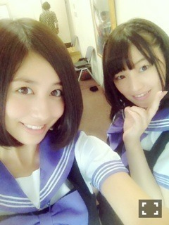
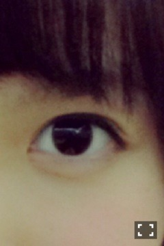
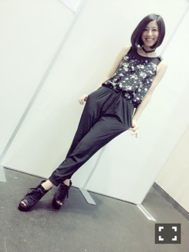

| 2013/09 06 Fri | 青森到着ー(´>∀<｀)ゝ |
ちはるーむへようこそヽ(・∀・)ノ
東京公演おわった！！
たのしかった！！
あれ？やばい！宿題！
やばい終わらない！
どーしよどーしよ！
行きの新幹線でやっても終わる気がしない！
握手会！
楽しかった！
帰りの新幹線でやってるはずなんだけど気付いたら寝てた！
やばいぞこれは！！
徹夜なのかこれは！！
あー宿題ー宿題ー
ふう。なんとか終わった。。
安心！！
てかテスト今日提出じゃないんかーい！
３時半まで頑張った意味...
てかやばい！明日テストやん！
テストテストテスト...
やっばいテスト中眠いやー
ふう！やっと終わった！
やっと勉強から解放された！
ブログ書ける！！...ん？
あれ、喉痛い？
頭、痛い？？あれ？
ブログ...書けない？
あれ、寝てた...朝だ...
あれ、この声...だれ？？
ハスキーボイスすぎやない？
学校だ...
しかも７時間だ...
やっと終わった！！
あ、やばいしなきゃいけないこと思い出した...
撮影のための買い物だ！
久しぶりにままと買い物なんだけど少し体が重いぞ...
家帰って来た！
すぐ寝た！
そして今日。
やっとブログ書けた！
風邪も治って来た！安心！
とゆーことなんです。。
わかってくださいましたかね。。
言い訳がましくなってしまってすみませんが本当の事なんですのです。のです。
遅くなってごめんなさい！
お久しぶりです皆さん(o^^o)
楽しい夏休みが終わり...
こんなに終わって欲しくないと思ったのは初めてというくらい充実してた夏休みが終わってしまい...
学校よ！！
二学期は行事がいっぱいよ！！！
一度しかない高２、楽しみますかっ

美味しいもの食べたい。笑
(●´-` ●)(●´-` ●)(●´-` ●)(●´-` ●)
集計結果っっ
1位 かなりん
2位 若月
............以上っ？？だけっ？？
ってことはダントツでかなりん！！
びびった！集計してる自分も！！
とゆことでー
簡単すぎましたねー
ごめんよー

かなりん！♡
なぜ2人の間に空間があるかというとね？
愛未もそのとき近くにいて、
一緒に入ってたから一緒に撮ろうと思ったら
はい、ちーず☆
の は でもうどっか消えてた訳さ。。
ほんっと自由なんだからっ(｢･ω･)｢がうっち
今日は！！

だれでしょーう
(●´-` ●)(●´-` ●)(●´-` ●)(●´-` ●)
遅くなりましたが、
Zepp東京最高でした

昼には生ちゃんがくじ引いたから
またまたコントできたし！！
悔い残ってたからよかったわ◟( ˊ̱˂˃ˋ̱ )◞
思いっきりやれた◟( ˊ̱˂˃ˋ̱ )◞笑
もうライブできないの寂しいな...
って思ってたけど今度は代々木があるなんて！！！！！
あんな広いところでできるなんて！！！！
嬉しい限り♡
ふふ。その辺は今日のアメブロでちょっと書きますのでね。ふふ。
そう！
今日のアメブロ担当はちはる！ゆったん！
よかったら読んでくれると嬉しいです

そして９月１日個別握手会！

全身黒コーデだけど、
ノースリーブと肩あたりの透け感でまだまだ涼しく♪
INGNIのオーバーオールだよ\( ˆoˆ )/
初めましての方もたくさんいらっしって嬉しかった(o^^o)
もっと、増えないかななんて(o^^o)
そしてそしていつもありがとう！
の方(o^^o)
ありがとうが伝わってることを信じます(o^^o)笑
(●´-` ●)(●´-` ●)(●´-` ●)(●´-` ●)
青森♪
新幹線の中ではテイラーの曲をシャッフルして聞いてた笑\( ˆoˆ )/
明日の青森も楽しみだ
じゃねっ
ばいるんっ
るんるんっ
ちはるんっ
(´>∀<｀)ゝ
コメント(273)
2013/09/06 18:00